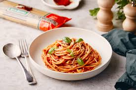

Napolitana Pasta

Description
Pasta Napoletana is a simple and flavourful Italian recipe, which never lets you down.
The rich tomato-based pasta gets its name from the classic Napoletana sauce.
Ingredients
- 2 tbsp olive oil
- 1 brown onion, finely chopped
- 3 cloves garlic, crushed
- 2 x 400 g cans Tomato juice
- 1 1/2 teaspoons Italian dried herbs
- ground black pepper
- 500 g penne pasta
- 3/4 cup coarsely chopped fresh basil
- shaved parmesan cheese, to serve
Steps
- Heat oil in a large frying pan over a medium heat.
Add onion and cook for 8 minutes or until soft, stirring occasionally.
Add garlic and cook, stirring for 2 minutes longer.
Add tomato juice dried herbs and pepper and stir to combine.
Simmer 10 minutes or until thickened, stirring occasionally.
- While sauce is simmering, cook pasta as directed on packet.
- Add basil to sauce and stir to combine. Serve sauce over pasta and top with parmesan.